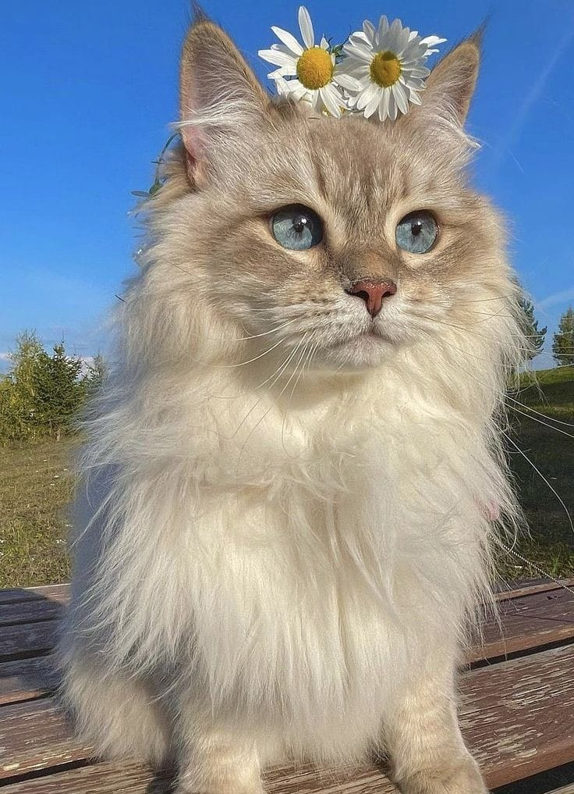

A house is a single-unit residential building. It may range in complexity from a rudimentary hut to a complex structure of wood, masonry, concrete or other material, outfitted with plumbing, electrical, and heating, ventilation, and air conditioning systems. Houses use a range of different roofing systems to keep precipitation such as rain from getting into the dwelling space.

The cat (Felis catus), also referred to as the domestic cat or house cat, is a small domesticated carnivorous mammal. It is the only domesticated species of the family Felidae. Advances in archaeology and genetics have shown that the domestication of the cat occurred in the Near East around 7500 BC. It is commonly kept as a pet and farm cat, but also ranges freely as a feral cat avoiding human contact. It is valued by humans for companionship and its ability to kill vermin. Its retractable claws are adapted to killing small prey species such as mice and rats. It has a strong, flexible body, quick reflexes, and sharp teeth, and its night vision and sense of smell are well developed. It is a social species, but a solitary hunter and a crepuscular predator.
Katseye (pronounced "cat's eye"; stylized in all caps) is a girl group based in Los Angeles, California. The group is composed of six members: Manon, Sophia, Daniela, Lara, Megan, and Yoonchae. With members from the Philippines, South Korea, Switzerland, and the United States, the sextet is often described as a "global girl group".
I love this experience! My mentor helped me a lot in understanding how to code and make blogs. We made step-by-step plans in how we can achieve a lot by the end of this course!